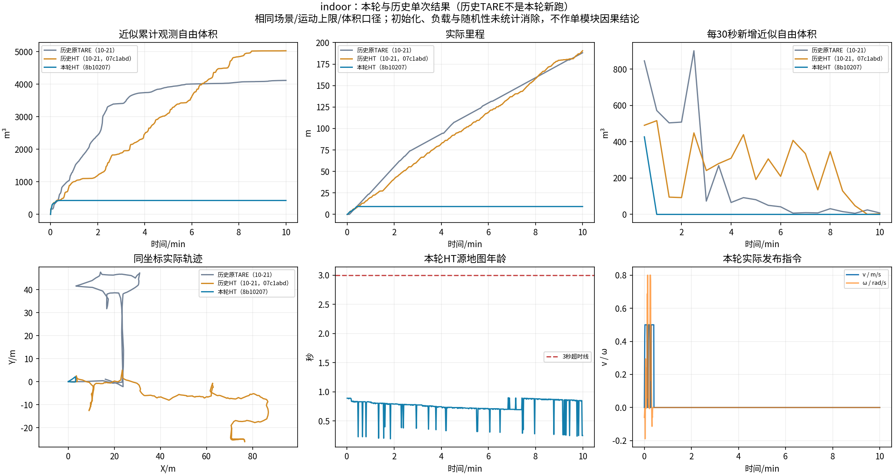
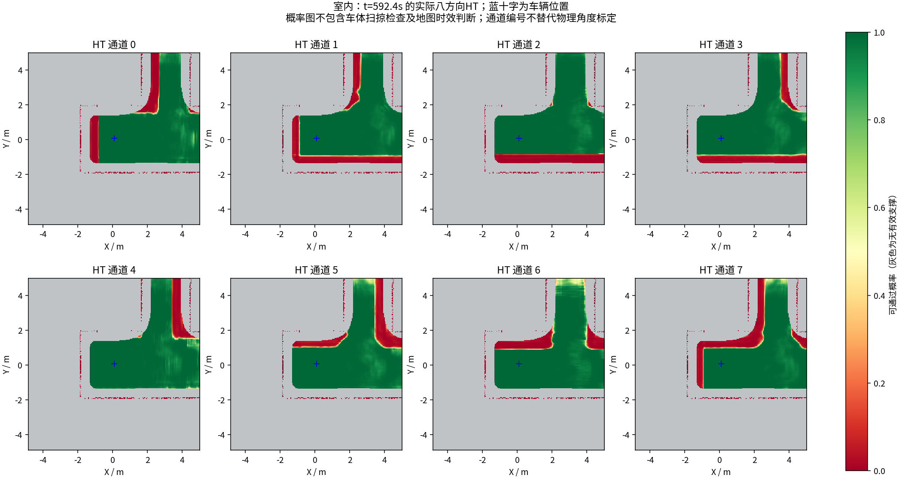
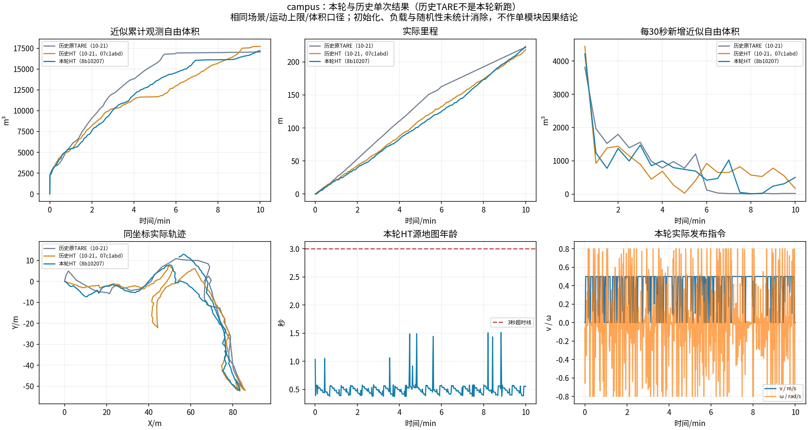
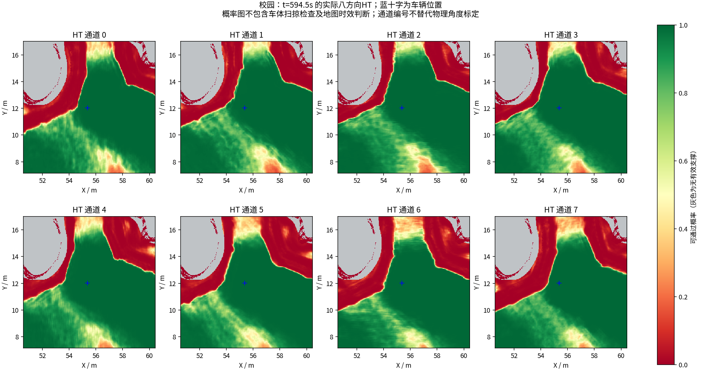

本轮测试结果须与下方异常一起阅读；完整录制通过不等于探索任务没有问题。
冻结提交：e640c0c1867fbe9408007c9f7b3e51bb9e66b801；算法基线为develop@8b10207。实车分支和外参未参与本轮。
每场独立重启，同一版本、原生起点，前进0.5m/s、倒车0.25m/s、角速度0.8rad/s；测量期间未修改算法和参数。
| 场景 | 实际时长/s | 实际里程/m | 近似观测自由体积/m³ | 触发返航/s | 到家完成/s | 地图年龄P95/s |
|---|---|---|---|---|---|---|
| indoor | 600 | 9.16 | 427.250 | 14.00 | 27.60 | 0.886 |
| campus | 600 | 221.56 | 17181.875 | 未触发 | 未触发 | 0.573 |
历史为单次参照，配置/代码变化和运行随机性同时存在，不能据此证明某个模块造成提升或退步。
内部任务末状态 COMPLETED。返航触发：约14.00秒；完成驻留：约27.60秒。
地图年龄超过3秒的采样 0 次；最长采样全零指令区间 576.0s。停车必须结合任务状态判断。
源时间戳指令审计：速度上限通过，常规加速度超限 0 次。显式全零停止按原口径单列。
XYθ搜索日志共 24 次：{'REACHED': 22, 'EXHAUSTED': 2}；成功直接连接 16 次。日志计数不等于TARE总规划周期。
返航判定的直接证据：t=13.817s 时 global_return=1、local_complete=1、全局顺序节点 0，仍统计到未覆盖点 96 / 前沿 139。
代码中的完成条件据此设置exploration_finished并转入返航。局部完成表示没有被选出的、满足条件的收益视点，不要求未覆盖点/前沿计数归零。为什么剩余区域没有进入可选择视点或全局探索子空间，仍需覆盖/候选图的更细证据；不能仅据本次日志认定为某一阈值或某次输入修正造成。
本轮很早结束且里程明显偏短，持续探索能力需要复核；不能把后续长时间零指令当成“稳定探索了10分钟”，也不能把内部COMPLETED当成环境已全部探索的真值。


GitHub完整10分钟视频；本机文件为indoor/camera_h264.mp4。
内部任务末状态 EXPLORING。返航触发：未触发；完成驻留：未触发。
地图年龄超过3秒的采样 0 次；最长采样全零指令区间 1.0s。停车必须结合任务状态判断。
源时间戳指令审计：速度上限通过，常规加速度超限 0 次。显式全零停止按原口径单列。
XYθ搜索日志共 597 次：{'REACHED': 536, 'TIME_LIMIT': 53, 'EXPANSION_LIMIT': 8}；成功直接连接 387 次。日志计数不等于TARE总规划周期。


GitHub完整10分钟视频；本机文件为campus/camera_h264.mp4。
独立编译通过；99项Python桥接回归通过，6/6 CTest目标通过，其中GTest为79通过、4个缺历史录制样本的用例跳过；不把跳过算通过。 初次Python收集缺CuPy测试依赖，随后两项回归缺sparse checkout样本；补齐对应环境与Git样本后重跑通过，未改断言。裸终端CuPy预检未带NVRTC库路径失败；使用实际runner相同CUDA环境后通过。 保存原始MCAP、CSV、地图/模型输入、参数JSON、日志、源/二进制哈希和完整解码视频。录制范围为全部发布控制/HT/状态，激光按源秒采样和周期快照，不是全频原始传感器无损记录。 体积口径：0.5m自由体素并集、0.25m射线步长、15m截断、回波前0.25m排除；属于近似观测量，不是真值覆盖率。历史曲线为已存在的单次运行；没有在本轮重新运行原TARE。 任务/地图状态为1Hz采样，运动表为0.5秒采样；表中完成时间是首次采样时间，不能解释为毫秒级状态转换测量。 本轮不更改导航算法以追求好看的测试结果。源码相同不保证无限时间、任意场景或实车无问题。 规划原理报告 · 逐项审计 · 历史输入与SHA256